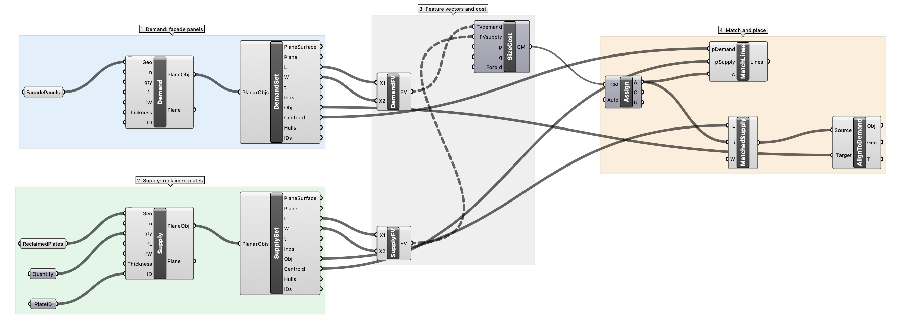

Panels from reclaimed plates
Match the panels of a façade, floor or partition to an inventory of reclaimed sheets and plates, so that every panel can be cut from a plate that is large enough in both directions.
Example file: 02_planar_panels.gh. The demand is a façade of 15 rectangular panels (three rows of five columns, 0.9–1.5 m wide and 1 m high); the supply is 18 reclaimed plates of different sizes and thicknesses, each with a quantity of 1 or 2 and an ID. Units are millimetres.

1. Demand
The panel outlines (closed rectangles) go into a PlanarObject and a PlanarSet. PCA puts PCA1 along each panel's longer side and PCA2 along the shorter side, so EffectiveLength ≥ EffectiveWidth for every panel. The same holds for the plates, which makes the two comparable without tracking which side is "horizontal".
2. Supply
The plate Breps go into a second PlanarObject with their Quantity and ID, then a PlanarSet. The thickness of each plate is its extent along PCA3, unless you supply a Thickness. Use LengthBuffer and WidthBuffer below 1 to keep a margin for trimming damaged edges.
3. Feature vectors and cost
Each side gets a FeatureVector with two features, EffectiveLength and EffectiveWidth, connected in the same order on both sides. AsymmEuclideanDistance treats a plate as valid only if it is at least as long and at least as wide as the panel; a plate that is too small in either direction gets the higher power Power2.
4. Match and place
Match, MatchLines, List Item and AlignToObject work exactly as in Linear members from stock. AlignToObject lays each plate in its panel's plane, centred on the panel, with the long sides aligned; the parts of the plate outside the panel are the offcuts.
Variations
- Thickness: add
Thicknessas a third feature, or useEuclideanDistanceon thickness alone when plates must match a nominal thickness in both directions. - Square panels: a square panel has no defined long side (see Orientation); its
EffectiveLengthandEffectiveWidthare still correct, but its in-plane rotation is arbitrary. UseOverridePCAwhen the rotation of the placed plate matters, for example for grain direction.